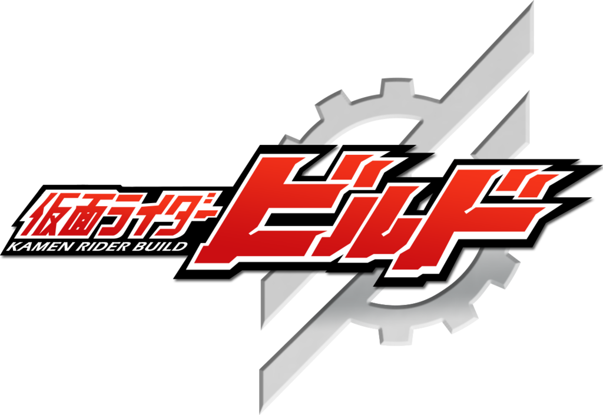
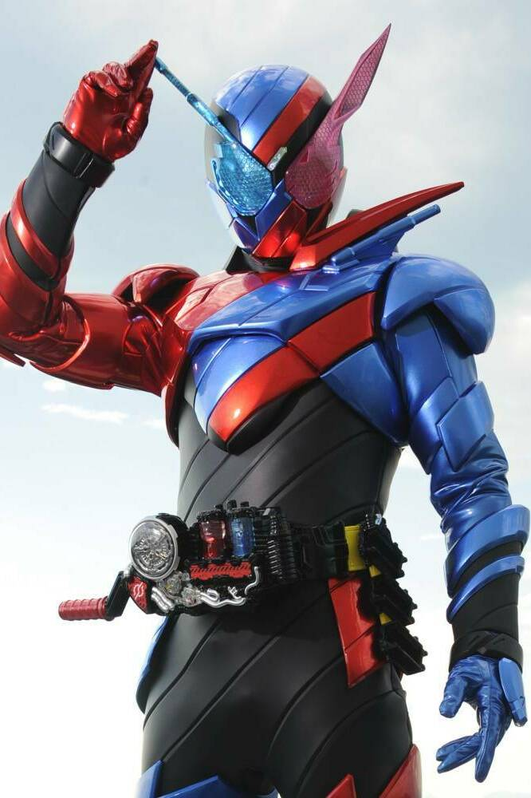
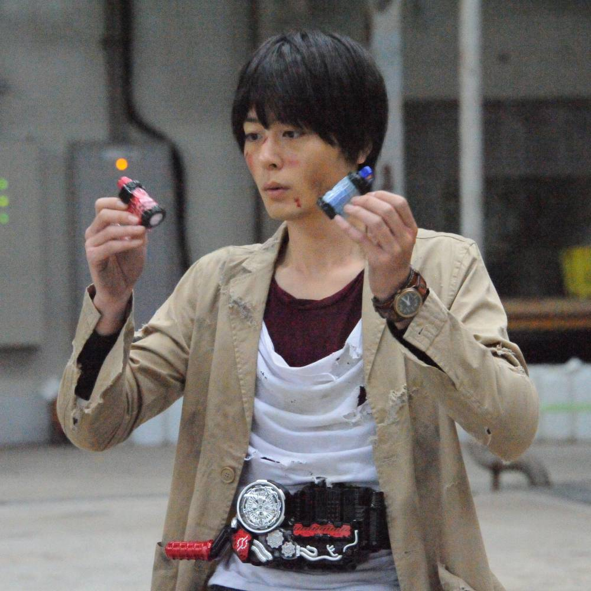
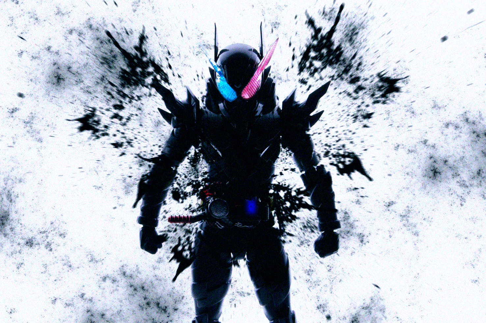
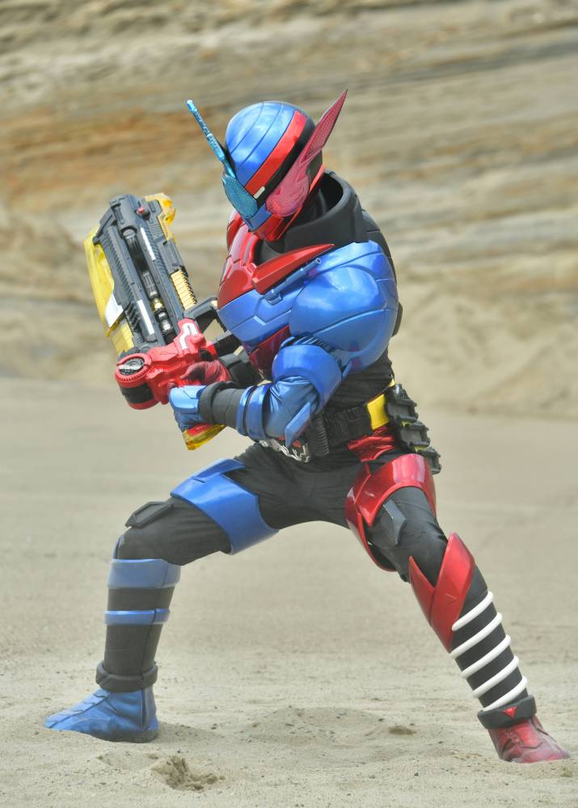
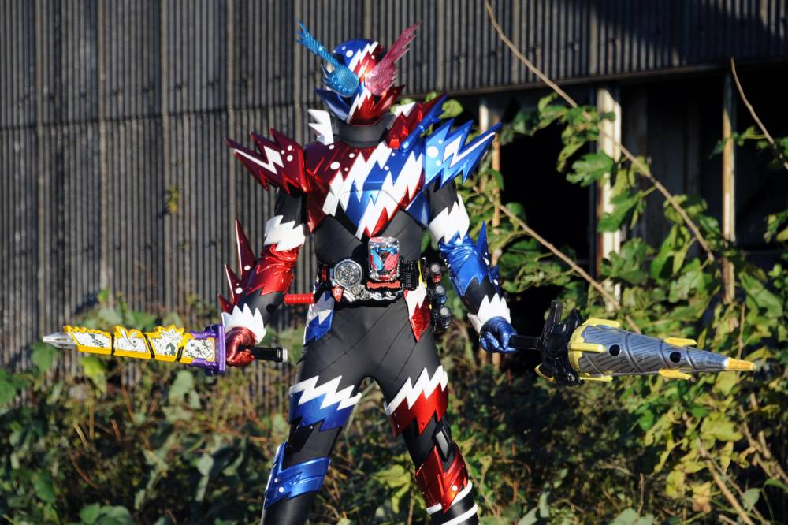
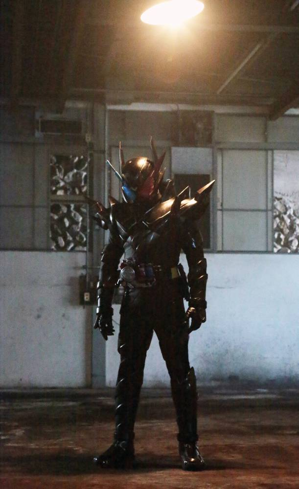
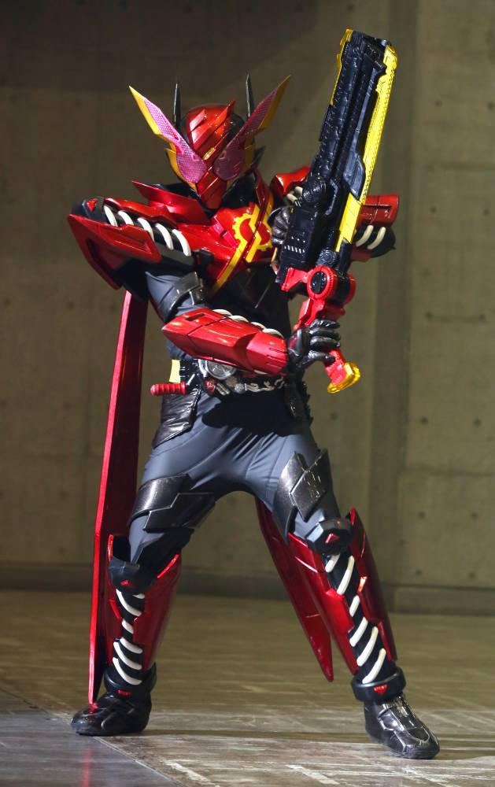
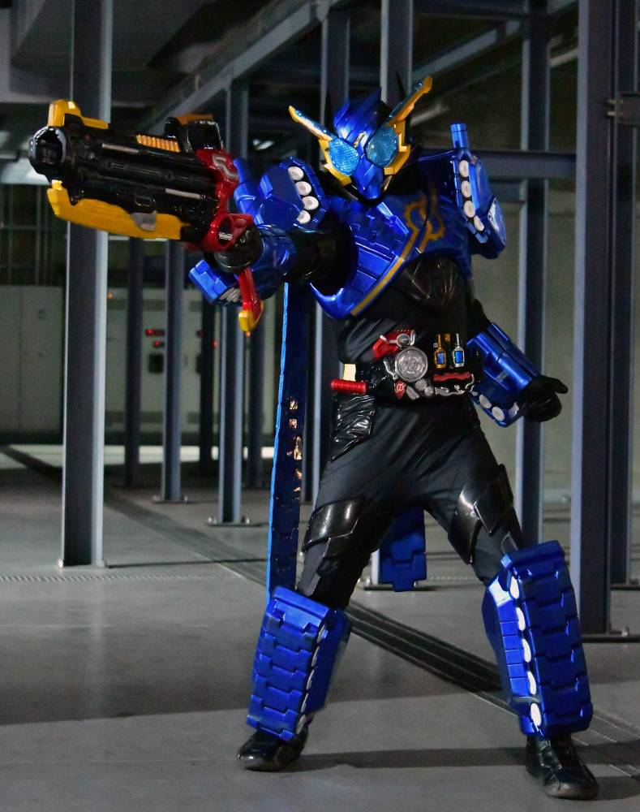
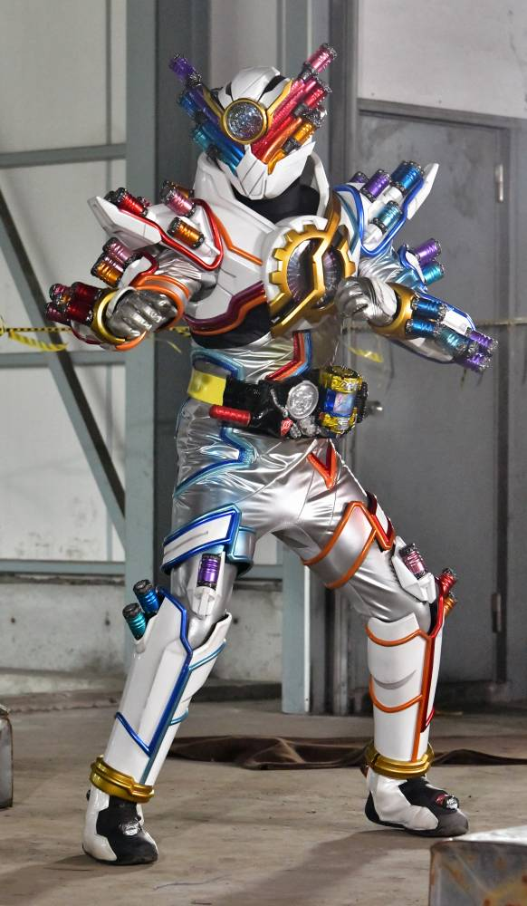

2017年から放送された「仮面ライダービルド」に登場する仮面ライダー
変身者は桐生戦兎。フルボトルと呼ばれる特殊な成分が入ったボトルを使い、変身する。
基本形態はラビットタンクフォーム。この作品にのみハザードレベルと呼ばれる１つの指標がある。
身長：196cm 体重：99kg パンチ力（右）：9.9t （左）:17t キック力（右）：23.7t （左）:17.8t ジャンプ力：ひと跳び55m 走力：100mを2.9秒程度

ビルドドライバーに有機物の性質を持つボトルと
無機物の性質を持つボトルの2つのフルボトルを装填し、レバーを回転することで変身する。
相性がいい組み合わせの場合、ベルトが「ベストマッチ！」としゃべる。
すごいテンションの高いベルトである。

ネビュラガスという特殊なガスへの耐久性を段階分けしたもの。
レベルは1から7まで存在する。
このレベルが高いほど戦闘力が高くなる。
戦闘中にレベルが上昇する場合がある。
ハザードレベルを急激に上昇させるアイテムも存在する。

ラビットタンクフォーム
「ラビット」と「タンク」のボトルで変身
ラビットの俊敏性とタンクの防御力を兼ね備えている。
使い勝手の良いベストマッチ。
スペックはハザードレベルに応じて変化する。

ラビットタンクスパークリングフォーム
「ラビットタンクスパークリング」という缶型のアイテムで変身
ラビットタンクより防御性能が上昇されている。
戦闘時に大小さまざまの泡を放出し、破裂すると衝撃波が発生する。
火力不足が少し目立つ。

ハザードフォーム（ラビットタンク）
２つのボトルと「ハザードトリガー」を使い変身
一時的にハザードレベルを急上昇させるが、それの負荷により、
敵味方問わず目に映るものすべてを破壊する兵器と化してしまう。
戦兎のハザードレベルが上がった終盤でも完全な克服には至らなかった。

ラビットラビットフォーム
「フルフルラビットタンクボトル」とハザードトリガーを使い変身
ハザードフォームの上にラビット型のアーマーを装着している。
フルフルラビットタンクボトルの効果でハザードフォームの暴走は起きず、
ハザードフォームより安全に、かつそれ以上のスピードで戦うことが可能。
専用武器「フルボトルバスター」での斬撃を得意とする。
平成最後の冬映画に何故かジーニアスフォームを差し置いて活躍していた。

タンクタンクフォーム
「フルフルラビットタンクボトル」とハザードトリガーを使い変身
ハザードフォームの上にタンク型のアーマーを装着している。
専用武器「フルボトルバスター」での射撃を得意とし、
ほぼすべてのスペックでラビットラビットフォームを上回る。
ちなみに、走力も勝っている。（ジャンプ力のみ負け）

ジーニアスフォーム
「ジーニアスフルボトル」を使い変身
全身各部に全６０個のフルボトルを装着。
複数のフルボトルの成分を掛け合わせ、新たな能力や複合機能を作り出す。
なのだが、劇中でこれといったシーンがないためよくわからない。
たぶんCG代が高くなるんだろう。世知辛い。
仮面ライダー一覧